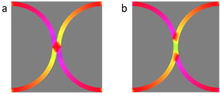

The SpinENGINE project will lay the foundations for a new, massively parallel, platform based on emergent behaviour in nanomagnet ensembles. The project will an efficient, highly scalable, and easily reproducible platform meeting the data challenges in our increasingly data-rich society. We will build upon our recent discoveries and use complex, nonlinear, and highly tunable interactions in such ensembles to realize a hardware platform for “Reservoir Computing”, a biologically-inspired computational approach. Our critical hypothesis is that the synergies between the inherent properties of nanomagnet ensembles and those required for reservoir computing will enable the efficient creation of a highly adaptive computational platform for the analysis of complex, dynamic data sets. This has the potential to greatly outperform current approaches using conventional CMOS hardware.
SpinENGINE will bring together a multidisciplinary team of researchers with expertise in computer science, condensed matter physics, material science, computational modelling, and high-resolution microscopy. This will enable us to simultaneously explore the fundamental behaviours of nanomagnet ensembles and understand how these can be harnessed for useful computation. By the end of the project, we aim to fabricate a proof-of-concept device capable of solving pattern recognition and classification problems, and, in collaboration with our industrial partner, IBM, produce a roadmap to the further scaling and commercialization of our computational platform. Success in the SpinENGINE project will have vast implications for data analysis at all scales, ranging from low power computation in the simplest sensor node to accelerated data processing in the most complex supercomputer.
 Micromagnetically-calculated domain wall arrangements at ring junctions with 100-nm-wide wires and (a) 10 % and (b) 100 % wire overlap. Colour represents magnetisation direction.